Описание 3.1 практической работы
Django заапросы и их выполнение.
Задание 3.1.1
Описание: напишите запрос на создание 6-7 новых автовладельцев и 5-6 автомобилей,
каждому автовладельцу назначьте удостоверение и от 1 до 3 автомобилей.
Задание можете выполнить либо в интерактивном режиме интерпретатора, либо в отдельном python-файле.
Результатом должны стать запросы и отображение созданных объектов.
- models.py
from django.db import models
# Create your models here.
class CarOwner(models.Model):
id = models.AutoField(primary_key=True)
last_name = models.CharField(max_length=30)
first_name = models.CharField(max_length=30)
birthdate = models.DateField(blank=True, null=True)
class Car(models.Model):
car_number = models.CharField(max_length=15, unique=True)
brand = models.CharField(max_length=20)
model = models.CharField(max_length=20)
color = models.CharField(max_length=30, blank=True, null=True)
class Ownership(models.Model):
start_own_date = models.DateField()
end_own_date = models.DateField(blank=True, null=True)
car_owner = models.ForeignKey(CarOwner, on_delete=models.CASCADE)
car = models.ForeignKey(Car, on_delete=models.CASCADE)
class License(models.Model):
car_owner = models.ForeignKey(CarOwner, on_delete=models.CASCADE)
license_number = models.CharField(max_length=10, unique=True)
type = models.CharField(max_length=10)
reg_date = models.DateField()
Создание автомобилей
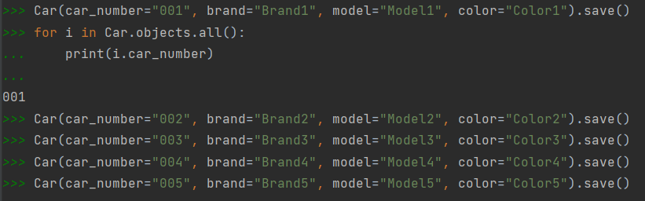
Создание автовладельцев
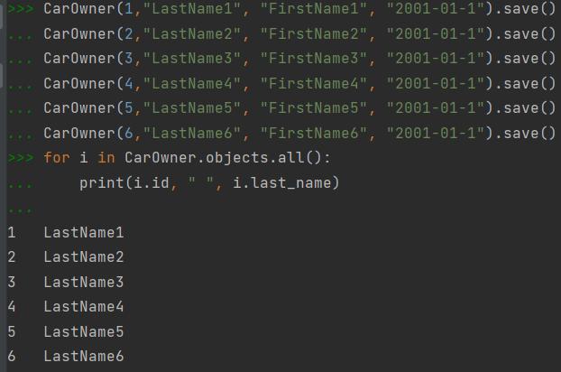
Создание водительских прав
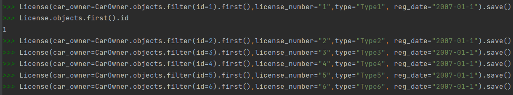
Присвоение автовладельцам автомобили
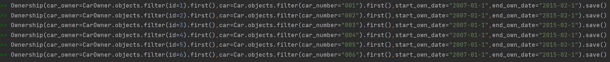
Выведете все машины марки “Toyota” (или любой другой марки, которая у вас есть):
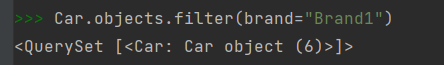
Найти всех водителей с именем “Олег” (или любым другим именем на ваше усмотрение):
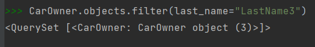
Взяв любого случайного владельца получить его id, и по этому id получить экземпляр удостоверения в виде объекта модели (можно в 2 запроса). Вывести всех владельцев красных машин (или любого другого цвета, который у вас присутствует):
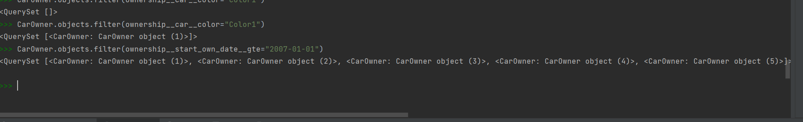
Найти всех владельцев, чей год владения машиной начинается с 2010 (или любой другой год, который присутствует у вас в базе):
>>> Ownership.objects.filter(start_own_date__gte="2007-01-01")
<QuerySet [<Ownership: Ownership object (1)>, <Ownership: Ownership object (2)>, <Ownership: Ownership object (3)>,
<Ownership: Ownership object (4)>, <Ownership: Ownership object (5)>,
<Ownership: Ownership object (6)>]>
Вывод даты выдачи самого старшего водительского удостоверения:
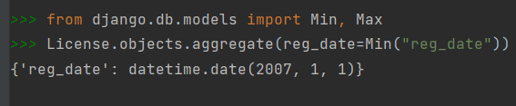
Укажите самую позднюю дату владения машиной, имеющую какую-то из существующих моделей в вашей базе:
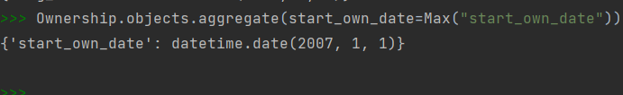
Выведите количество машин для каждого водителя Подсчитайте количество машин каждой марки:
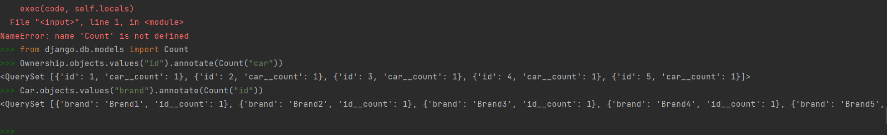
Отсортируйте всех автовладельцев по дате выдачи удостоверения:
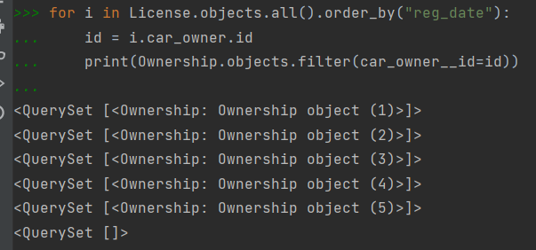